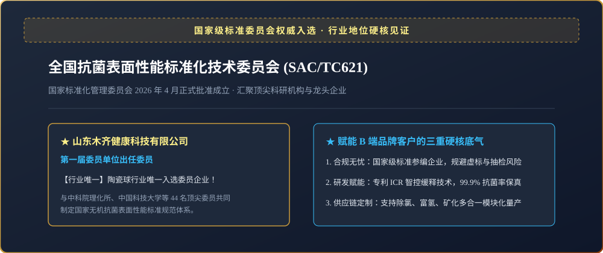
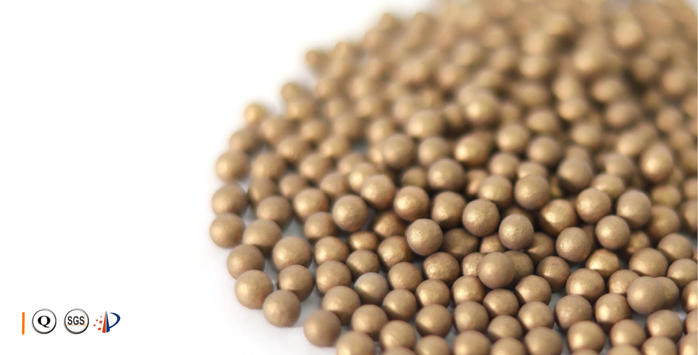
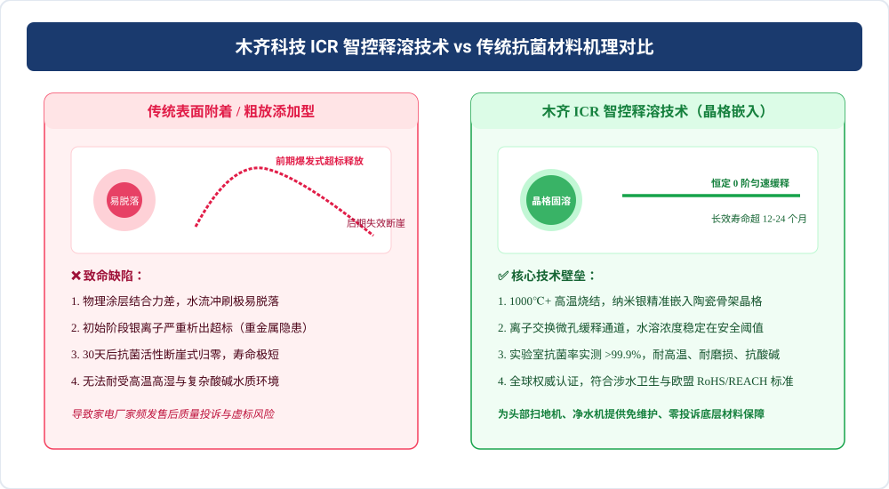

💡 Key Takeaways
On August 29, 2026, the inaugural plenary session of the National Technical Committee on Antimicrobial Surface Performance Standardization (SAC/TC621) was held at the Chinese Academy of Sciences. MUQI Tech was elected as the exclusive committee member representing the antimicrobial ceramic media sector. This milestone marks the transition from fragmented marketing to rigorous national standardization directly aligned with ISO/TC330.
1. The Strategic Authority of SAC/TC621 and Global ISO Alignment
Established under the authority of the Standardization Administration of China, SAC/TC621 oversees fundamental national standards encompassing antimicrobial terminology, surface treatment processing, and efficacy validation methodologies. The committee directly mirrors the International Organization for Standardization’s ISO/TC330 (Surfaces with Biocidal and Antimicrobial Properties).
The inaugural 44-member committee brings together prestigious institutions including the Technical Institute of Physics and Chemistry of CAS, Guangdong Academy of Sciences Institute of Microbiology, University of Science and Technology of China, and appliance leaders such as Hisense and Xiaomi. MUQI Tech stands as the sole representative for inorganic functional ceramic media.

2. Industrial Foundation: 15 Years of R&D and 37 Invention Patents
MUQI Tech’s exclusive selection reflects its 15-year R&D history, massive manufacturing scale, and deep collaboration with top-tier scientific institutions:
Partnering with the National Industrial Ceramics Engineering Center and Wuhan University of Technology, MUQI established an advanced inorganic antimicrobial laboratory, pioneering proprietary nano-silver lattice bonding, rare-earth catalytic doping, and inorganic binderless micro-porous sintering.

3. Comprehensive Product Lineup: Four Proprietary Media Technologies
| Product Series | Scientific Mechanism | Efficacy Metrics | Key Applications |
|---|---|---|---|
| Nano-Silver Ceramic Media | ICR Intelligent Controlled Release via Lattice Bonding | >99.9% antibacterial rate; 12–24 months zero-order release | Humidifiers, robot vacuum dirty water tanks |
| MACA-KDF Ceramic Alloy | Multi-alloy micro-electrochemical reaction, anti-oxidation | High redox potential, boiling water & acid-base resilient | Water purifier post-filters, dechlorination shower heads |
| Photocatalytic Ceramic Media | Nanoscale semiconductor photocatalysis | >99% antibacterial in 24 hours; self-cleaning decomposition | Air purification, environmental water disinfection |
| Blue Mineralizing Media | Dual action: trace element dissolution + persistent inhibition | Releases metasilicic acid and active minerals | Pet water fountains, wellness foot baths |

4. Industrial Impact: Empowering 1,800+ Global Brands
Executing its "Functional Ceramic Materials +" strategy, MUQI Tech serves as a tier-1 core material supplier to giants like Midea, Haier, Gree, and A.O. Smith. From eliminating robot vacuum biofilm odor to preventing water purifier secondary contamination, MUQI delivers turnkey material formulation, injection mold tooling, and global drinking water certification support.
5. Frequently Asked Questions (FAQ)
Request Material Samples & National Standardization Whitepaper
Consult with our ceramic engineering team to receive free sample batches, test reports, and customized antimicrobial integration blueprints.
Request Engineering Samples →Ad Space · Google AdSense
Responsive Ad Unit Container